Un problema con el diseño no puede ser el responsable del retraso en la renovación de los paneles informativos con la nueva distribución de las terminales del aeropuerto de El Prat.
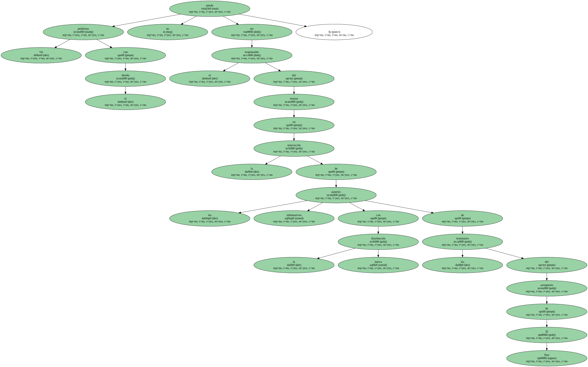No es lógico que se cometan estas dejadeces después de que AENA se decida a ejecutar una reorganización que debe tener muy estudiada y basada en criterios de funcionalidad y se supone que también de rentabilidad.
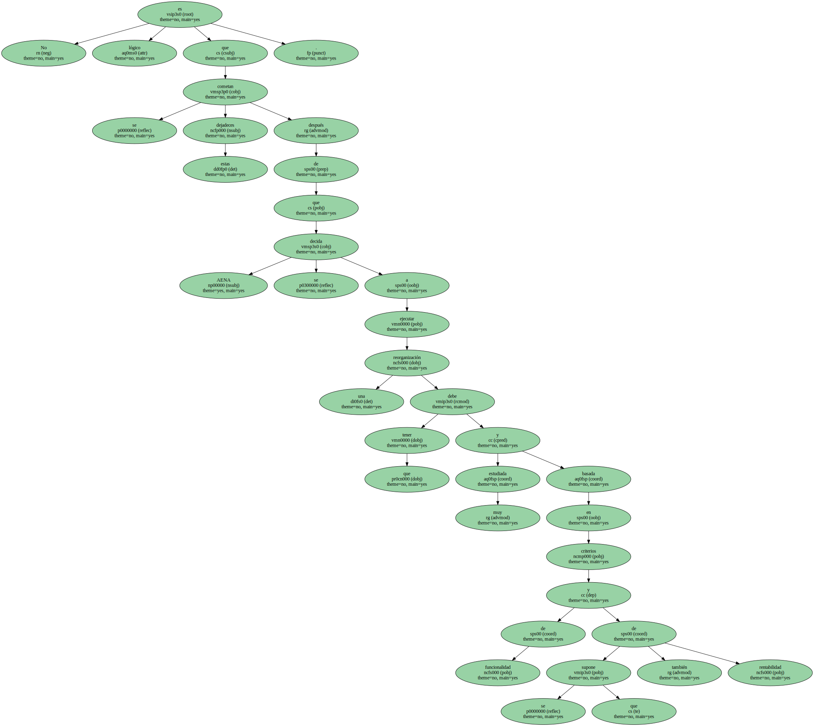Lo que se ha hecho en El Prat , la distribución de terminales por compañías y no por destinos , es un sistema que aplican multitud de aeropuertos en todo el mundo.
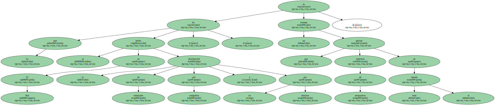Nadie piensa que este cambio es para fastidiar al usuario , sino para todo lo contrario , para prestar un mejor servicio.
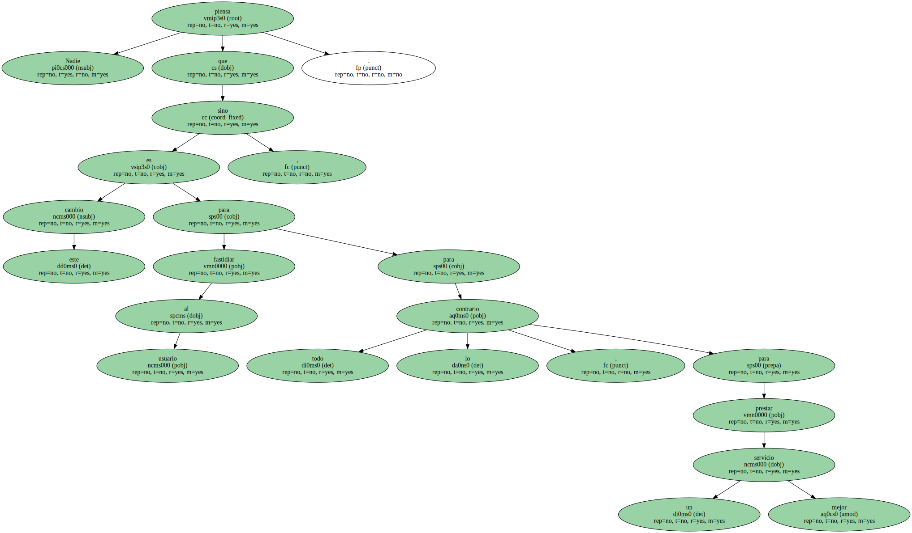Y eso incluye algo tan básico como la señalización.

Moverse por un aeropuerto ya cuesta trabajo.
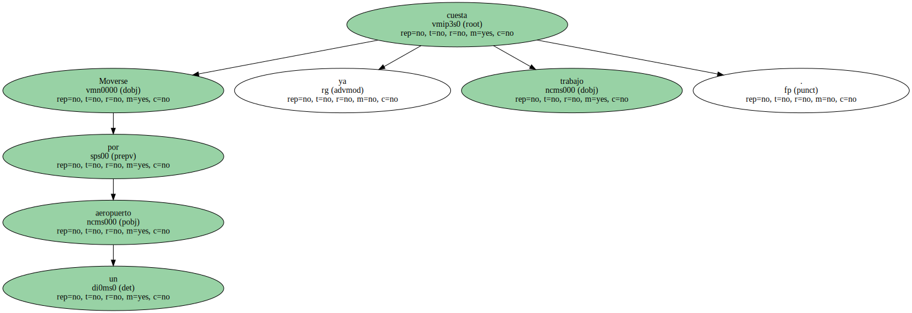Las distancias son largas ; las esperas , desesperantes.
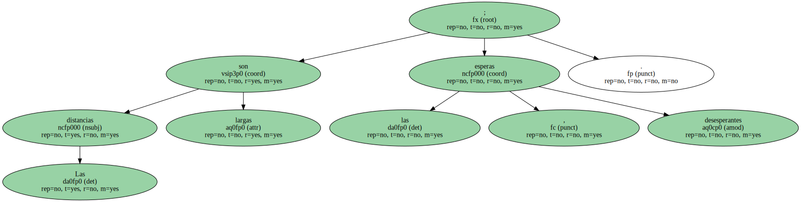Por eso un buen sistema de orientación es vital.
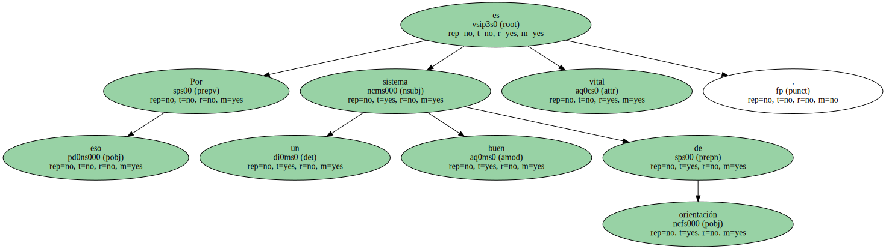Pues imagínense llegar en coche a El Prat sin conocer de antemano la terminal desde la que sale el vuelo que debemos tomar.

En los accesos no hay indicaciones.
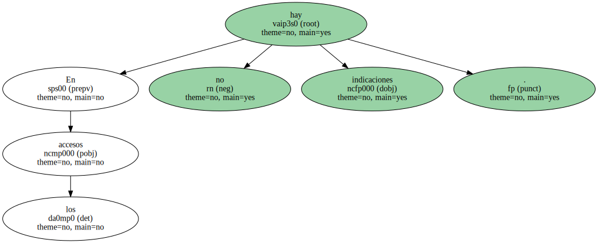Hay que elegir al azar entre la terminal A o la B.
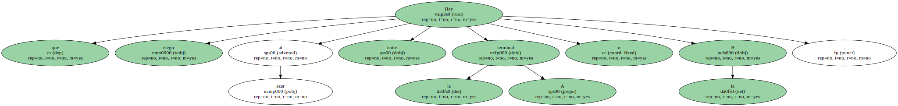Aparcamos y cuando llegamos a la zona de facturación nos percatamos de que nuestra terminal no es la elegida.
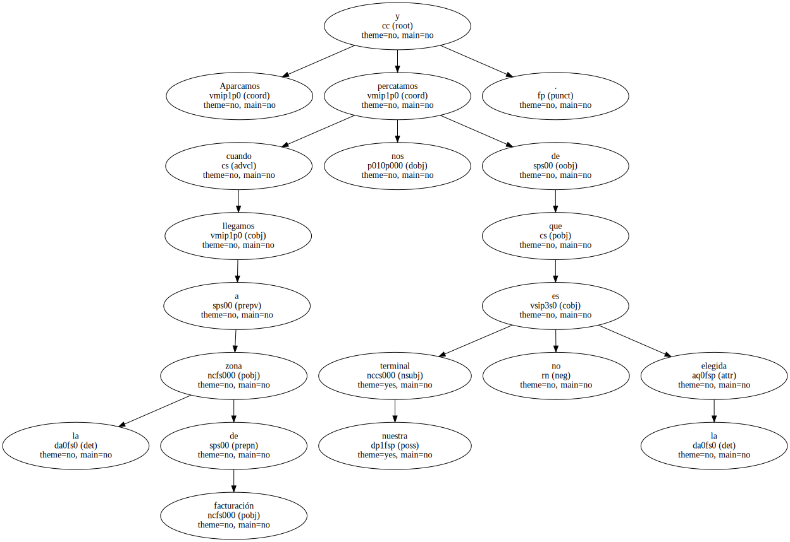Pues venga , andando hasta la correcta y con el equipaje a cuestas.
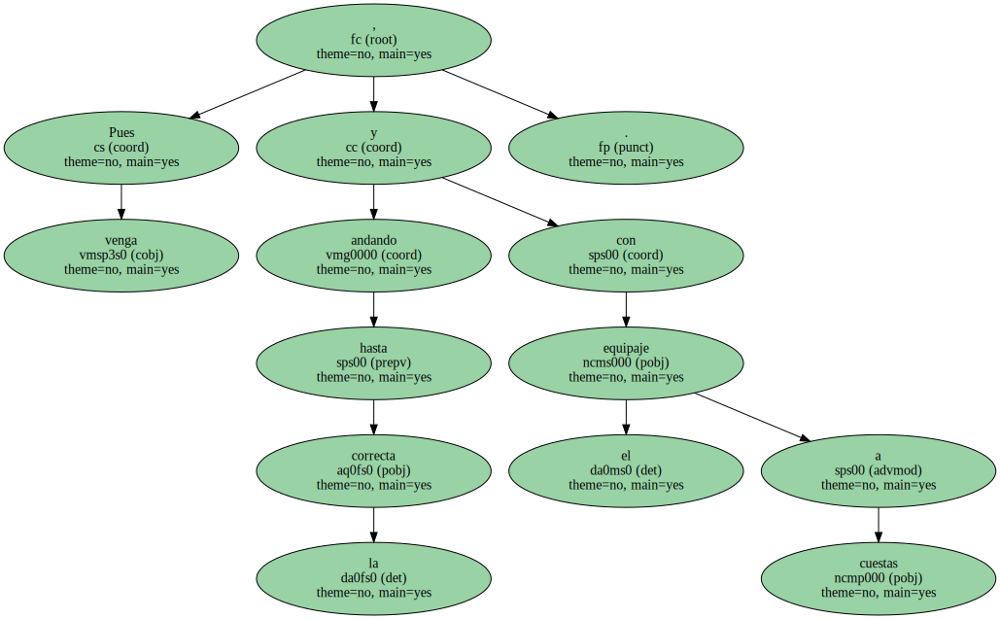Con la reorganización de las terminales se persigue una mejora de la calidad del servicio , pero el olvido de la señalización no colabora precisamente en la consecución del objetivo.
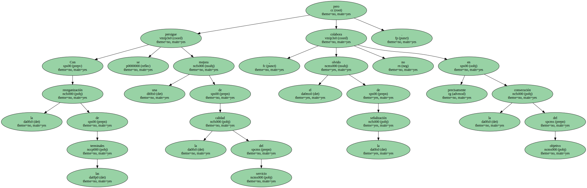